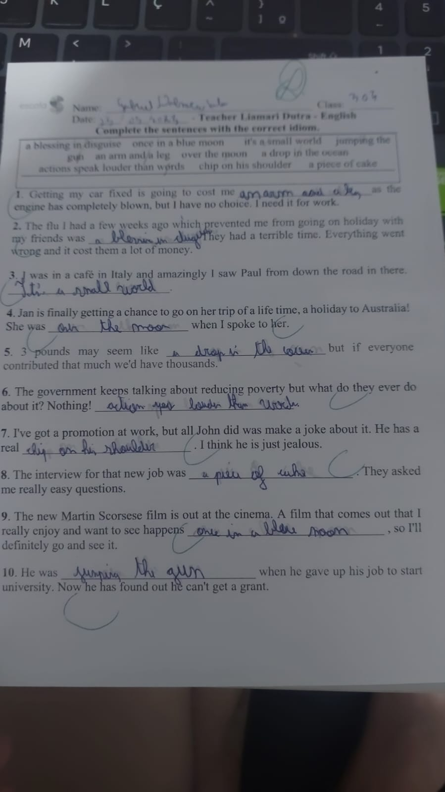
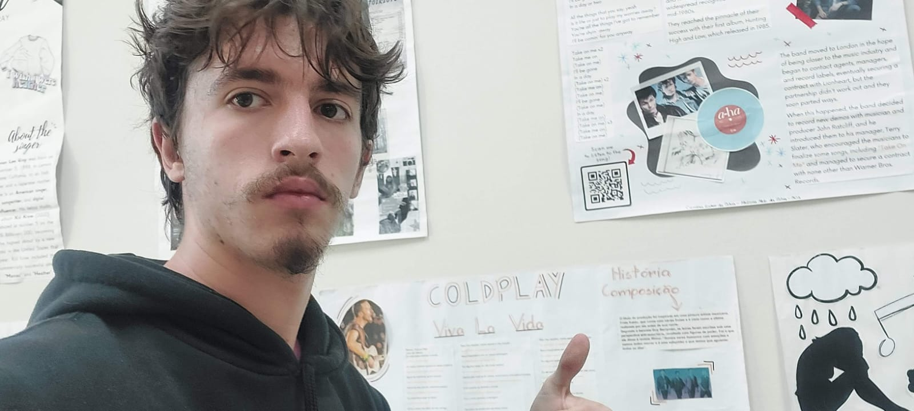

-
1 - Redação Mobilidade urbana

-
2 - Mapas conceituais Cap 2 e 3

-
3 - Verb Tense Review

-
4 - Are you a digital Citizen?

2º Trimestre
-
1 - Atividade de Idioms
 -
2 - Trabalho sobre Filmes e Séries
Trabalho sobre Breaking Bad - Inglês -
4 - Feira
No dia, pude ver posters que outros grupos além do meu fizeram sobre bandas ou músicas, e ver um pouco de um jogo que estava acontecendo
